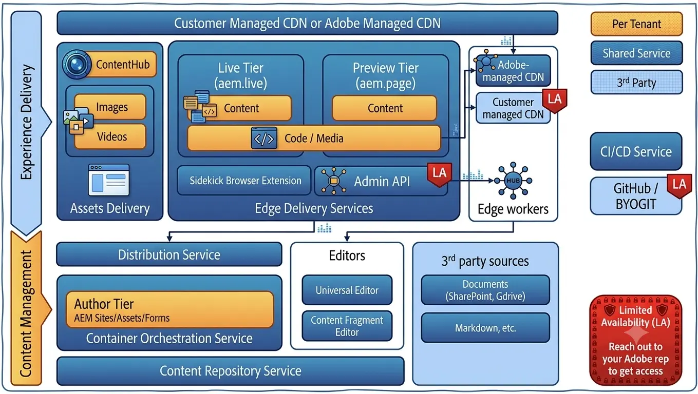
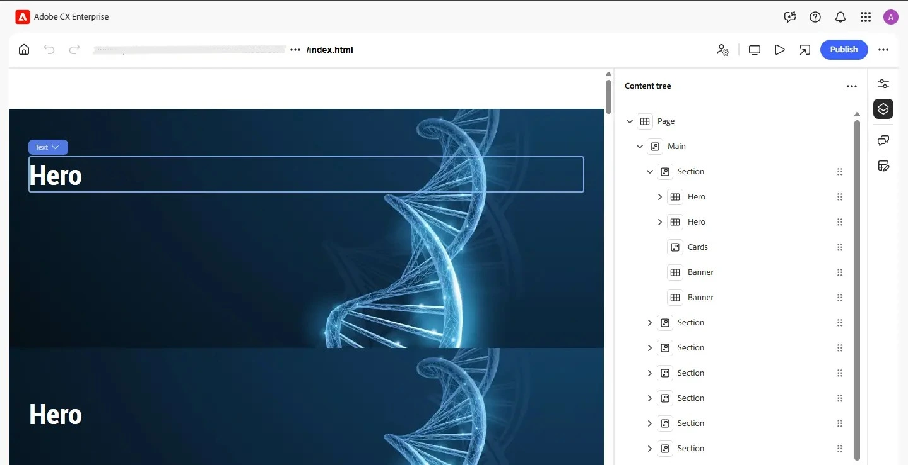
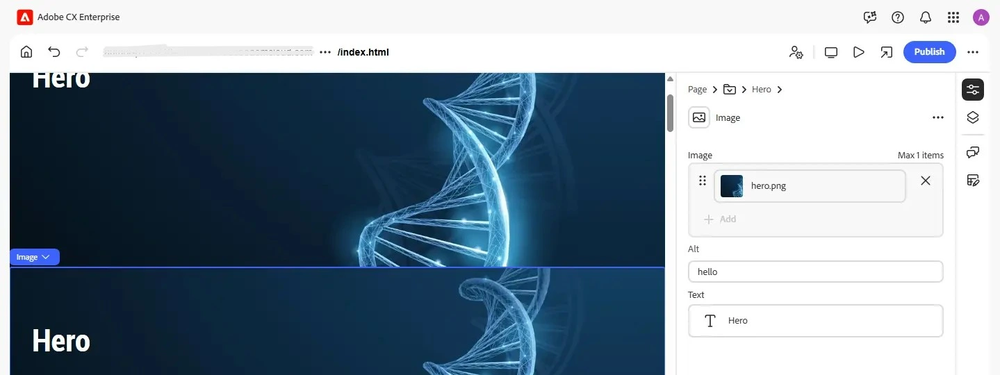

Blogs > Edge Delivery Services (EDS) & The Universal Editor: A Complete Overview
AEM EDS
Edge Delivery Services (EDS) & The Universal Editor: A Complete Overview
| September 10, 2026If you've been anywhere near the Adobe Experience Manager ecosystem in the last couple of years, you've heard the term "Edge Delivery Services" thrown around a lot - often alongside claims of perfect Lighthouse scores and sites that go live in weeks. Most overviews stop at the marketing pitch. This one doesn't - we're going one level deeper into how a request actually flows through EDS, what a real project looks like, and how the Universal Editor connects to it under the hood.
Part 1: What Is Edge Delivery Services?
Edge Delivery Services (EDS), formerly known internally as "Helix" or "Franklin" - names you'll still see scattered across tool and repository names - is Adobe's modern content delivery framework, built directly into Adobe Experience Manager as a Cloud Service. Its core idea is simple: separate authoring from rendering. Content is authored somewhere - a document, or an AEM page through the Universal Editor - converted into clean, semantic HTML, and served straight from Adobe's edge network with no server-side application logic at request time.
It's worth being precise about one thing: EDS is not a CDN replacement. It's designed to sit on top of your existing CDN, or Adobe's own managed CDN, and handle how content is authored, assembled, and shipped to that CDN.
How a Page Actually Gets Served
This is the part most overviews skip, and it's the part that actually explains why EDS feels so fast to develop on. Every EDS project is built from three separate "buses":
-
Code Bus - your HTML, CSS, and JavaScript, synced directly from your GitHub repository via the AEM Code Sync GitHub App.
-
Content Bus - your actual page content, pulled from wherever you author it - an AEM as a Cloud Service content source when the project uses the Universal Editor, or a connected Google Drive/SharePoint folder for document-based authoring.
-
Media Bus - images and other binary assets, optimized and served separately from the content that references them.
When a visitor requests a page, Helix Admin pulls the code from the code bus, the content from the content bus, and the assets from the media bus, merges them on the fly, and hands the result to the CDN. Your JavaScript only ever enhances DOM that is already valid, readable HTML - nothing is client-render-blocking, which is a large part of why EDS scores so well on Core Web Vitals. There's no build step and no deploy pipeline in between - pushing a commit to your repo, or publishing a change from your content source, updates the live site within seconds.

You'll also come across two URL types once you set a project up: an aem.page URL, which is your preview environment showing unpublished changes, and an aem.live URL, which is the actual published site your visitors hit. Both sit behind the same code and content buses - the difference is simply which version of the content each one is pointed at.
Two Ways to Author, One Rendering Engine
It's a common misconception that EDS only means "writing content in a Word or Google document." That's one valid authoring mode - document-based authoring - but it's not the only one. A project built on the Universal Editor / xwalk variant of Adobe's boilerplate is authored visually against a real AEM as a Cloud Service content source instead, and EDS renders that published AEM content through exactly the same block-based pipeline either way. The two modes differ mainly in one config file:
-
fstab.yaml - used by document-based projects to mount a Google Drive folder or SharePoint site as the content root.
-
paths.json - used by Universal Editor / xwalk projects to map a real AEM content path (e.g. /content/your-site/) to the site root instead.
A project only needs one of these, not both - unless you're deliberately building a hybrid setup where some sections are authored in AEM and others as plain documents, which is a valid but distinct architecture decision.
Blocks: The Building Blocks of an EDS Page
Content needs a way to render as more than plain text - a carousel, an accordion, a hero banner - and that's what blocks are for. A block is a structured, named section of content; EDS turns it into a corresponding div in the page's DOM, and a matching JavaScript/CSS pair in your repo's /blocks folder decorates it into the real UI. In a Universal Editor project, each block folder also carries a small JSON model file describing its authoring fields - more on that in Part 2. A typical block folder looks like this:
-
/blocks/hero/hero.js and hero.css
-
/blocks/cards/cards.js and cards.css
-
/styles, /scripts, head.html
Adobe maintains a small set of blocks in its boilerplate templates that ship with every new project, plus a larger, open-source Block Collection of commonly needed blocks (carousels, tabs, accordions, and similar) that you can pull in as a starting point and then fully restyle. Neither is meant to be used unmodified - the value is the content structure they define, not the exact CSS. (Curious how a block actually gets built end to end? We'll walk through creating one from scratch, field by field, in an upcoming post - blog creation in universal editor.)
Why Teams Are Actually Adopting EDS
Performance that shows up in Lighthouse, not just marketing slides. EDS sites are built performance-first from the ground up - minimal JavaScript, no heavy client-side framework, unbundled CSS/JS shipped as-is, and a rendering pipeline optimized for Core Web Vitals. A 100 Lighthouse score, which used to take serious specialist effort on a traditional stack, becomes a realistic default here.
SEO - and now GEO - by default. Fast, semantic, server-rendered HTML has always been good for traditional search engine optimization (SEO). What's newer is that the same properties - clean markup, fast load times, clear content structure - also make a site easier for AI-driven "answer engines" to read and cite, which Adobe refers to as generative engine optimization (GEO).
Development speed - no build step, no bundler. There are no Maven builds, no Cloud Manager pipelines, and no OSGi bundles to manage. Developers write plain HTML, modern CSS, and vanilla JavaScript, and a published change goes live within seconds. That simplicity also happens to make EDS codebases very approachable for AI coding assistants, since there's no complex build graph to reason about.
Plays well with classic AEM. EDS doesn't require a rip-and-replace project. EDS and classic AEM Sites can run side by side on the same domain, which is common on larger sites where only certain sections (like a blog, or a campaign microsite) move to EDS first, with content flowing both ways between the two. EDS also integrates with Adobe Target for personalization and experimentation, and with Adobe Launch/Tags.
Part 2: Authoring with the Universal Editor
The Universal Editor is a visual, what-you-see-is-what-you-get (WYSIWYG) editor built as a genuine editor-as-a-service - it works in tandem with AEM to author content, but runs independently of any specific front end rather than being baked into it. That's a deliberate design choice: it supports true decoupling of the implementation, letting developers use virtually any framework or architecture they want without imposing any SDK or technology constraint. Adobe positions it as the natural successor to the older Page Editor and SPA Editor for AEM in-context authoring going forward.
How the Connection Actually Works
The Universal Editor doesn't render your page itself - it loads your live application in a remote frame and connects to it via a small JavaScript library embedded in your page. That library is what lets the editor detect editable regions, report the page's structure back as a content tree, and push authoring changes back into AEM in real time. For an EDS project, AEM renders the HTML but pulls in the scripts, styles, icons, and other resources straight from Edge Delivery Services - so everything an author edits is persisted back to AEM, while everything a visitor sees is still served through the same fast EDS pipeline described in Part 1.

The content tree on the right mirrors the exact component structure of the page, so an author can jump straight to any component instead of hunting for it visually. Selecting a component - here, an image and heading inside a Hero block - opens its properties directly in a side panel, letting you swap an asset, edit alt text, or change copy without ever leaving the visual preview.

What Defines the Editable Fields
The fields you see in that properties panel aren't generated automatically - they come from a small set of JSON model files that live alongside each block in the repository, and are merged into three root files the Universal Editor reads directly from the published site:
-
component-definition.json - what the editor's "Insert component" panel is built from, listing every component available to authors.
-
component-models.json - the actual editable fields for each component (text, rich text, image, boolean, select, and more) - this is what turns into the form you see in the side panel.
-
component-filters.json - controls which child components are allowed inside a given container, so an author can't drop a component somewhere it was never designed to go.
These three root files are never hand-edited - they're generated from smaller fragment files, one per block, and rebuilt with a single command whenever a block's model changes. That's matched on the front end by the corresponding block's own CSS and JS, which decide how the same field actually renders once the page is live. Any field exposed this way shows up automatically in the Universal Editor - which is also how developers extend the editor for their own custom components.
Getting Started as a Developer
For EDS projects specifically, Adobe provides a dedicated starter template built for exactly this Universal-Editor-plus-EDS combination, so you don't have to wire the connection up by hand. Instrumenting a fully custom, non-EDS AEM application instead is more involved - it means announcing the Universal Editor's service endpoint, loading its embed script, and defining a persistence connection back to your content source - but for a standard EDS project, the starter template handles nearly all of it out of the box.
Privacy-Respecting Operational Telemetry
To help diagnose performance issues and measure experiments, EDS-powered sites collect a limited set of operational data - but only a small, sampled slice of total page views, and with personally identifiable information deliberately excluded. It's built for troubleshooting, not for tracking individual visitors.
Frequently Asked Questions
Is Edge Delivery Services free?
EDS is included as part of Adobe Experience Manager as a Cloud Service - it isn't a separately licensed add-on product.
What are the code bus, content bus, and media bus?
They're the three sources merged to build every page on request: the code bus holds your HTML/CSS/JS from GitHub, the content bus holds authored content, and the media bus holds images and other binary assets. Splitting them apart is what lets a content change go live without any code redeploy.
Do I need to set up my own CDN?
Not necessarily. New EDS projects are reachable on .aem.page (preview) and .aem.live (published) domains immediately, backed by Adobe's own CDN. You can layer your own CDN on top of that if you need custom caching rules or a branded domain, but it isn't required to get started.
Do I need to know classic AEM to use the Universal Editor?
Not necessarily. The Universal Editor's WYSIWYG interface lets authors publish content confidently without deep AEM experience, while developers work in plain HTML/CSS/JS and simple JSON field definitions, rather than traditional AEM-specific component APIs.
Can I try it before committing to a project?
Yes - Adobe provides a ready-made tutorial environment for hands-on exploration, as well as a self-guided tutorial that walks through setting up a project from scratch in under half an hour.
Where to Go From Here
If you want to get hands-on, Adobe's aem.live documentation is the canonical source for EDS, alongside Experience League's Universal Editor documentation for the AEM side of things. Support is available through the Experience League Community, a Discord channel for quick questions, and formal support tickets for teams with a contractual SLA once their site is registered in Cloud Manager.